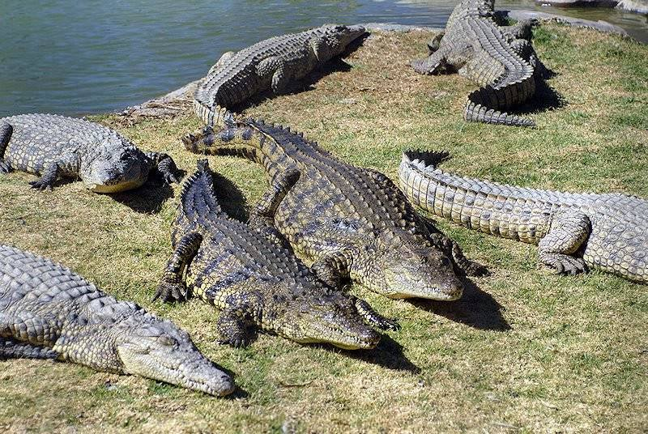
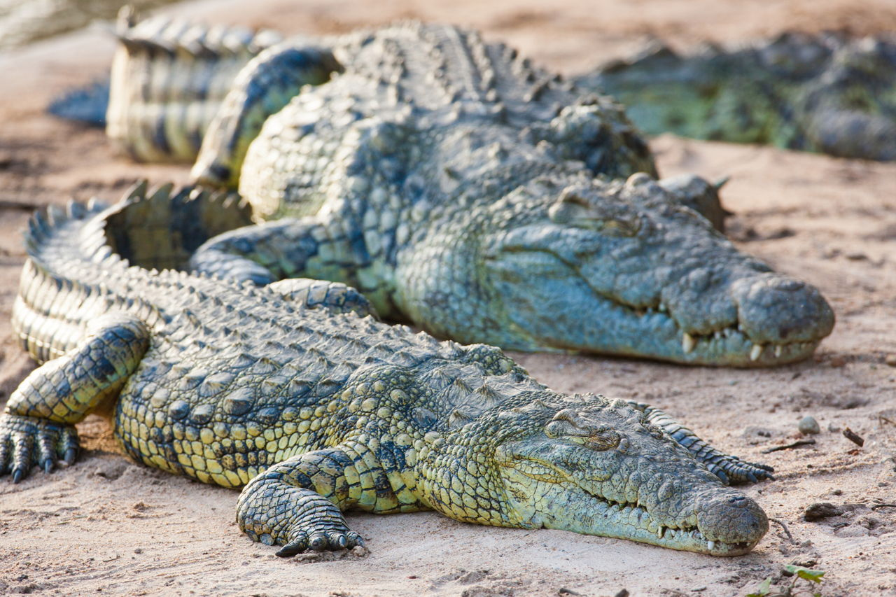
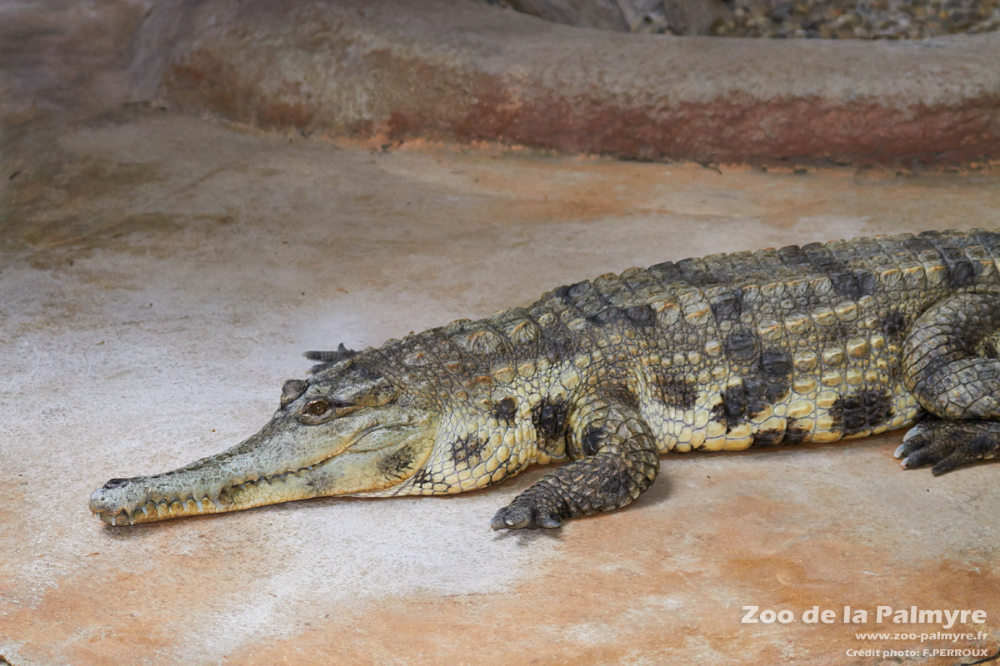
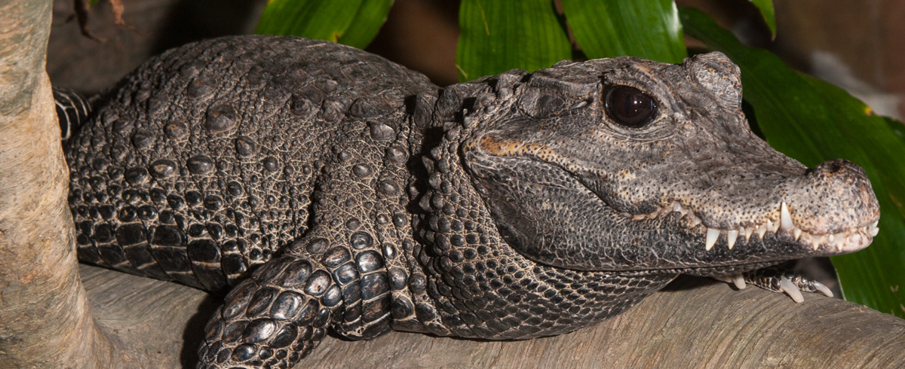

Crocodiles of Africa
Three Major Species
- Nile
- Slender-Snout
- African Dwarf

Crocodiles are among the wide range of flora and fauna Africa supports. This is because Africa provides a variety of environments from desert, to grasslands and forests, to wetlands. There are three major species of crocodiles in Africa including the Nile, Slender-snouted, and African dwarf. These three species share only a few common traits and inhabit different areas of Africa. Crocodiles are cold-blooded and carnivorous meaning they need to bask in the sun and eat meat in order to gain energy. Crocodiles are strong swimmers, but move slowly on land therefore much of their hunting is done in the water or along river banks.
| Nile | Slender-Snout | African Dwarf | |
|---|---|---|---|
| Size | 4.3 meters | 3 meters | 1.6 meters |
| Location | Rivers, Marshes, Swamps | Rivers, Lakes | Rivers, Swamps, Rainforests |
| Diet | Small and Large Game | Primarily fish | Fish, Frogs, other small game |
| Population | approx. 400,000 | approx. 10,000 | approx. 60,000 |
The Nile
Nile crocodiles have a conservation status of least concern mostly due to its label as an apex predator with no natural enemies. They can grow to be up to 6 meters long and are armed with a set of powerful jaws. Due to their size, Nile crocodiles can take down a range of prey including antelope and wildebeests. This usually occurs during migration when herds are forced to cross rivers. See Nile crocodiles in action! Nile crocodiles are one of the most common crocodiles species; however, much like other species they are also facing habitat loss due to human activity and deforestation.
The Slender-Snout
Slender-snouted crocodiles are a medium sized species with adults growing up to 3 meters on average. Their defining characteristic for which they were named is their long slender snout containing razor sharp teeth used for retrieved prey from small crevices. Slender-snouted crocodiles are labeled as critically endangered due to habitat loss through human disturbance of forested wetlands. They are also hunted for their skin which is tan with black spots absolutely eye catching.
The African Dwarf
African dwarf crocodiles are found across West and Central Africa in rainforests and swamps and are considered the smallest species of crocodile in the world. On average adults grow to about 1.6 meters in length. Like other crocodiles, the African dwarf is a carnivore whose diet consists of smaller prey such as fish and frogs. They are nocturnal and normally exhibit a grayish-black color with pale yellow underbellies. Unlike other crocodiles their whole bodies are covered in tough scales. Even with their cloak of armour, the African Dwarf crocodile carries a conservation status of vulnerable as human disturbance is causing habitat loss.